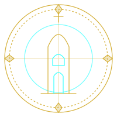

Founder · Principal Investigator
Jack Knight
LOC: SAN DIEGO, CACLASS: INDEPENDENT RESEARCHERCLEARANCE: FOUNDER
Dossier
Profile
Jack Knight founded HiTower Institute to do hands-on, public-interest research from the field. He's an independent researcher based in San Diego who lives and works off-grid, and his research grows directly out of that life: what it really takes to keep power, water, and access flowing for people outside the usual systems.
Lines of Inquiry
Research Areas
- Coastal energy access. A California Public Records Act (CPRA) study of public EV charging access and pricing on public coastal land.
- Off-grid power resilience. Logging and modeling battery capacity and real-world energy use in mobile living.
- Hydrogen power for mobile systems. Fuel cells and hybrid systems for van conversions and portable generators.
- Critical-mineral market integrity. Detecting fraudulent bulk copper and scrap-metal offers on B2B marketplaces against benchmark pricing.
Channels